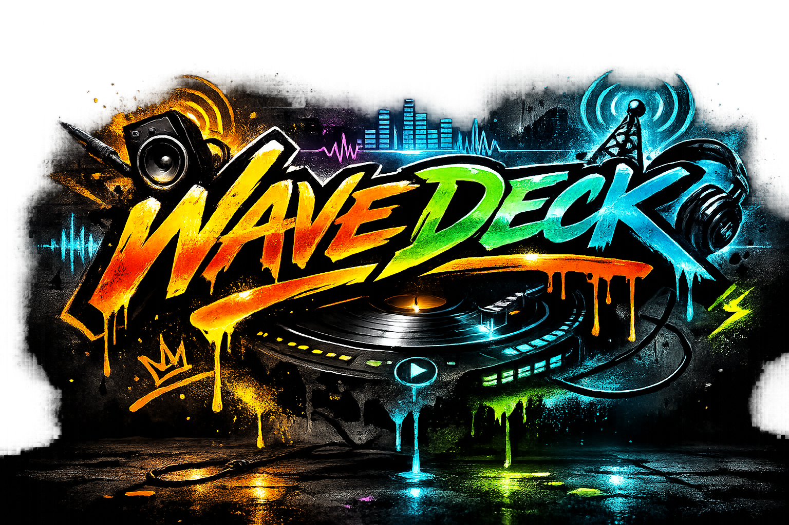

| Fav | Name | Group | Actions |
|---|

About WaveDeck
WaveDeck is a portable home for Streaming Radio and Local Music. It keeps your stations, presets, listening history, Local Radio settings, and music data together in its own portable Data folder.
User Guide
Getting Started and Portable Data
Choose Streaming for internet radio or Local Music for your MP3 library. Click a station, Local Station, Local Mix, or song to begin. The row below the player shows what is playing and whether it came from Streaming or Local Music.
WaveDeck keeps your stations, preferences, listening history, Local Radio settings, and music information in a Data folder beside the application. To move WaveDeck to another computer or a USB stick, keep that folder with the app. Updating WaveDeck replaces the application files; it does not replace your existing Data folder.
Streaming Radio
Use the Streaming tab to browse internet stations. Search looks through station names, groups, subgroups, countries, descriptions, and URLs. Star a station to mark it as a Favorite. Add a station to Presets when you want it in your personal ordered list for Previous and Next.
Open a station row to read its description and adjust its Station Gain. Gain changes only that station, from −12 dB to +12 dB, and WaveDeck remembers it. The main volume slider still controls overall listening volume.
Listening time starts after 30 seconds of continuous playback. Stations can appear in Your Top Five after they have accumulated five minutes. Settings shows each station’s total and lets you reset the history.
Streaming Toolbar, Presets, and Favorites
The Streaming toolbar opens Search, Presets, Favorites, and Your Top Five. These are views of the same Streaming library; they do not make copies of stations. Presets can be reordered by dragging a station’s title area, and that order is used by the Previous and Next controls and media keys.
You can expand a station briefly to read its information or adjust gain. Station details collapse again after a short time to keep the list tidy. Streaming group headings stay open while their subgroups can be expanded or collapsed.
Local Music Setup and Music Information
Turn on Enable Advanced Features in Settings → General to make Local Music available. WaveDeck scans the portable Music folder beside the app, and you can add one optional Additional Music Folder in Settings → Local Music. Use Rescan after adding music or changing tags.
WaveDeck reads your MP3 information into its own portable index; it does not change your MP3 files. It uses song, artist, album, Album Artist, year, genre, rating, Favorite, and Do Not Play information when available. Your MP3 RATING tag uses a 0–10 scale: 10 is five stars and 5 is two and a half stars. A rating of 0 means unrated.
A track marked DO_NOT_PLAY=1 is never selected by Local Radio or a Local Mix. A Favorite tag gives that song a stronger chance when it fits the station.
Playing Local Music
Search your Local Music library by song, artist, album, or year. Each matching song can start Song Radio, Artist Radio, or Play Album.
- Song Radio starts from a song and looks for music that belongs with it.
- Artist Radio stays focused on the selected artist—about 90% of its selections are from that artist, with only an occasional related-artist change.
- Play Album plays the album in order, then moves into Artist Radio when the album has a clear Album Artist. Various Artists albums stop when they end.
Recently Played Local Stations appear when the Local Music search box is empty. Star a Local Station or Local Mix to save it in Local Music Presets. The Local Music toolbar can show those presets, Local Mixes, or only your starred Local Music choices.
How Local Radio Chooses Music
Local Radio starts with musical relationships that make sense: the seed song or artist, shared credits, specific genre or tag links, and useful Last.fm similar-artist information. It waits when no credible next song is available instead of jumping to unrelated music.
Your own information matters most. Favorite tracks and higher ratings are given better odds; Last.fm popularity is a helpful fallback or tie-breaker, not a replacement for your taste. Ratings and tags are read only from the music you own.
Use the thumbs-up button when a Local Radio selection is especially right for that station. A skip is a softer negative signal. Feedback is stored per Local Station or Mix, so it guides that station without globally banning a song you may like elsewhere.
Local Mixes
Local Mixes are broad, radio-style formats built from the music you have, such as Classic Rock or Grunge Era Rock. They use editable JSON format books in Data/local-mixes and only appear when they have at least 20 eligible songs.
Settings → Local Music → Manage Local Mixes shows every installed book, its eligible-song count, and a readiness label. Enable the mixes you want to see in Local Music; optional books you add later stay hidden until you turn them on. Star a mix to move it to the top of the Local Mixes list.
Local Radio Controls and Crossfade
Open Local Radio Controls from the sliders icon at the left of the Local Music playback controls. It lets you shape Song Radio and Local Mixes. Song Familiarity moves from Play Deep Cuts Too to Balanced Mix to Favor the Hits. It changes the odds among songs that already fit the station; it does not make unrelated music eligible.
Song Repeat Wait sets how long a song rests before it can return. Artist Repeat Wait sets the break before an artist returns. Artist Sets can play Single Tracks, Two-fers, Three-way, or Four-play sets. Artist Radio itself uses its fixed artist-focused behavior rather than these taste controls.
Enable 8-second crossfade blends Local Music tracks, Local Radio, Local Mixes, and albums. It is on by default and does not affect Streaming Radio.
Last.fm Music Data and Live Radio Log
Last.fm is optional. When enabled in Settings → Local Music, WaveDeck can refresh song popularity, useful genre tags, and related artists in its own portable music database. It never writes those details into your MP3 files.
Enter a Last.fm API key, test the connection, then use Refresh Last.fm Music Data when you want a catch-up refresh. The progress bar shows when music data is already updating. The subtle Open Live Radio Log link opens selection diagnostics, including prior choices recorded while the log was closed.
Settings, Library Management, and Updates
Settings → Streaming Stations lets you add, edit, search, and organize streams. The Groups tab creates, renames, reorders, and removes groups and optional subgroups. Removing a group moves its stations to Other; removing a subgroup leaves its stations in the main group.
Export Library downloads your Streaming station listings as JSON. Import Stations adds entries from a JSON file without removing what you have. Replace Library replaces the station library after confirmation. Favorites, Presets, station gain, and listening history remain personal and separate.
When Download new stations is enabled, WaveDeck quietly checks its master Streaming library at startup. Updates can add stations, groups, and subgroups, or correct URLs and descriptions. They never delete a station, restore one you deleted, or alter your Favorites and Presets.
Playback Controls, Recording, and Media Keys
Stop ends the current playback. For Streaming, Previous and Next move through Presets. For Local Music, Next skips to the next song and Previous restarts the current song or returns to the prior one when available. The thumbs-up control is used only for active Local Radio or Local Mixes.
On Linux, the Record control can save a Streaming station as a continuous MP3 in the portable Recordings folder. Stop, changing stations, and closing WaveDeck safely finish a recording. Recording uses its own stream connection, so your volume, mute, and Station Gain do not change the saved audio.
Media keys follow the same behavior when your operating system gives WaveDeck access to them. If another program has claimed a media key, returning focus to WaveDeck or starting a station can help WaveDeck reclaim it.
Sidebar Mode and Mini Player
The Linux Application Shortcut adds WaveDeck to your Applications menu without installing or moving the AppImage. It should work on Cinnamon/Mint, GNOME, KDE Plasma, Xfce, and most other mainstream Linux desktops. Pin it using your desktop’s normal panel, dock, favorites, or launcher method.
When Sidebar Mode is available, its toolbar button docks WaveDeck at the edge of the screen. Settings can also launch WaveDeck in Sidebar Mode automatically.
On Linux and Windows, Mini Player is a title-bar-height, always-on-top control bar. Choose Mini Player from the WaveDeck tray menu or press Ctrl + Alt + Shift + M to toggle it. Click its text to switch between the current song and the station or Local Mix. Drag only the left grip to move it along the top edge; its controls include mute. Right-click anywhere on it to exit Mini Player or choose Default, White, Chiefs, Army, Cherry, Gray, Denim, Rosewood, Sapphire, Bamboo, or Aloe. It remembers its color and position, then returns to the full view you were using when you toggle it off.
Help, Backup, and Platform Notes
If one stream will not play, try another first. The station may be offline or its URL may have changed. Leave automatic station updates enabled to receive published corrections. If Local Music does not appear, confirm Advanced Features is enabled and use Rescan after checking your Music folder.
For a portable backup, copy the entire Data folder. On Linux, the AppImage needs permission to execute and playback requires mpv. On Windows, SmartScreen may require More info → Run anyway. On macOS, extract the ZIP on the Mac, remove quarantine if needed, then Control-click the app and choose Open.
Source Code and Notices
WaveDeck source code and project information are available at github.com/dandrewriley-devo/WaveDeck. WaveDeck is released under the MIT License and includes third-party components, including mpv, under their own licenses and notices.
Changelog
WaveDeck 1.0 - Full Release - Oct 2, 2026
0.11.0 — Various Refinements
- Artist Radio now stays 90% focused on the selected artist.
- Finished albums now transition into Artist Radio when possible.
- Closing the main WaveDeck window now also closes Settings and Live Radio Log, then fully exits the app.
0.10.0 — Interface Tuning
- Reorganized player controls, toolbars, station rows, and Station Gain styling.
- Unified Streaming and Local Music row styling.
- Added a built-in User Guide and a simplified in-app changelog.
0.9.0 — Local Mix Expansion
- Added a Local Music settings page for managing installed Local Mix books.
- Shows each mix’s eligible-song count and a readiness guide, from Growing Mix to Excellent Mix.
- Optional JSON books in Data/local-mixes are discovered automatically and stay hidden until enabled.
- Moved Local Mix eligibility analysis into background batches to keep the app responsive.
0.8.0 — Crossfade Local Music
- Added optional 8-second Local Music crossfade, enabled by default.
0.7.x — Local Music
- Added ability to search and play a portable or local MP3 library.
- Added Last.fm indexing and enrichment of the local music library.
- Reads MP3 tags into WaveDeck’s portable index.
- Builds Local Radio around musical relationships using Last.fm data and your own ratings.
- Remembers Recently Played Local Stations and Local Station Presets.
- Added Local Mixes: broad, curated radio-style mixes using artist and era rules and Last.fm data.
- Added contextual thumbs-up and thumbs-down feedback for Local Radio.
- Updated the player around separate Streaming and Local Music tabs.
0.6.7 — Stream Recording
- Added Advanced Features toggle, with Simple Mode enabled by default.
- Added Linux stream recording.
- Added the portable Recordings folder beside Data, created automatically on startup.
- Added an Advanced-only Recordings view with search.
- Added drag-and-drop subgroup ordering.
0.6.5
- Added live per-station Station Gain, adjustable from −12 dB to +12 dB.
- Search improvements.
- Brought the Windows version into feature parity with Linux version.
0.6.0
- Various UI Adjustments.
- Added a show Favorites-only filter.
- Renamed Most Played to Your Top Five and reduced the list to five stations.
- Added an option to launch WaveDeck automatically in Sidebar Mode.
0.5.0
- Added optional automatic station-library updates.
- Updates can correct station URLs, countries, and descriptions.
- Updates never delete stations or alter Favorites and Presets.
- Deleted master stations remain deleted locally.
0.4.0
- Linux and Windows share data.
- Added station search.
- Reordered the listing stack.
- Standardized the shared portable data folder as Data.
- Combined stations, groups, and subgroups into library.json.
- Moved Favorites and Presets into the separate preferences.json file.
- Added single-file library import and export.
- Fixed a Linux D-Bus crash when leaving Sidebar Mode.
- Added separate platform-specific runtime storage.
0.3.0
- Added a portable Windows version.
- Bundled the Windows mpv playback engine.
- Added Windows media-key support with automatic registration retries.
- Made the Windows EXE use the portable Data folder beside the application.
0.2.5
- Added toolbar toggles.
- Added the startup message “Warming up the airwaves...”.
- Added automatic Linux media-key reclaiming every 15 seconds.
0.2.4
- Various UI Fixes
- Standardized Linux ZIP extraction into the same portable folder while preserving Data.
0.2.3
- Separated Presets from Favorites.
- Added key-combo shortcuts.
- Added Expand All and Collapse All controls.
"Whatever you do, do it all for the glory of God."
Changelog
WaveDeck 0.9.0 - Local Mix Expansion
- Adds a Local Music settings page for managing every installed Local Mix book.
- Shows each mix’s eligible-song count and a simple readiness guide, from Growing Mix to Excellent Mix.
- Local Mixes now need at least 20 eligible songs before they appear for playback.
- Optional JSON books added to Data/local-mixes are discovered automatically and stay hidden until you enable them.
- Classic Hits appears first whenever it is ready to play.
WaveDeck 0.8.0 - Crossfade Local Music
- Adds a real 8-second Local Music crossfade, enabled by default. Local Radio, Local Mixes, and albums blend smoothly while Streaming stays unchanged.
WaveDeck 0.7.x — Local Music Update
- Adds Local Music: search and play your MP3 library.
- Adds Last.fm indexing and enrichment of local music library.
- Reads your MP3 tags into WaveDeck’s portable index.
- Builds Local Radio around musical relationships using Last.fm data, and your own ratings.
- Remembers Recently Played Local Stations and Local Station Presets.
- Adds Local Mixes: broad, curated radio-style mixes using artist and era rules and Last.fm data.
- Adds contextual thumbs-up and thumbs-down feedback for Local Radio. Votes give WaveDeck gentle, station-specific guidance.
- Updates the player around separate Streaming and Local Music tabs.
WaveDeck 0.6.7 — Stream Recording & Settings Update
- Added Simple Mode and optional Advanced Features, with Simple Mode enabled by default.
- Added Previous Preset, Play/Pause, Record, Stop, and Next Preset controls in Advanced Features.
- Added Linux stream recording to continuous MP3 files without automatic song splitting.
- Added the portable Recordings folder beside Data, created automatically on startup.
- Added an Advanced-only Recordings view with search, playback, Show in Folder, and Trash actions.
- Made recording finish safely when playback stops, the station changes, or WaveDeck closes.
- Kept playback volume, mute, and Station Gain independent from the saved recording.
- Polished the Settings window with a General default tab, grouped settings cards, a consolidated Import / Export section, and clearer version and library-location information.
- Added drag-and-drop subgroup ordering with a visual drag handle and drop target.
WaveDeck 0.6.5
- Added live per-station Station Gain, adjustable from −12 dB to +12 dB.
- Saved Station Gain separately in each user's preferences so library imports and updates cannot overwrite it.
- Applied each station's saved gain automatically whenever it plays.
- Changed active searches to show only matching station results, temporarily hiding Presets and Your Top Five.
- Changed the Settings toolbar icon back to a recognizable gear.
- Added the full WaveDeck changelog to the About tab.
- Brought the Windows edition into feature parity with Linux, including native Sidebar Mode and automatic Sidebar startup.
WaveDeck 0.6.0 — Linux Update Only
- Moved the main toolbar directly beneath the player and volume controls.
- Centered and reordered the toolbar controls.
- Replaced the Presets star with a bookmark icon.
- Added a “show favorites-only” filter for the main station listing.
- Renamed “Most Played” to “Your Top Five” and reduced the list to five stations.
- Made the Search field remain fixed beneath the toolbar when enabled.
- Removed the version number from the main toolbar; it remains available under Settings > About.
- Added an option to launch WaveDeck automatically in Sidebar Mode. (Linux Only)
- Made WaveDeck remember the Settings window’s size and position.
- Added monitor-safe window restoration for portable use on different computers and screen sizes.
- Fixed the Stations table so it expands with the Settings window and maintains even margins.
- Replaced the broken subgroup Rename dialog with reliable inline editing.
Version 0.5.1
Maintenance release — no new features.
- Added an independent HTTPS fallback for library updates.
- Fixed Linux systems failing to retrieve the master library through Electron’s network service.
- Update failures remain silent when the server is unavailable.
Version 0.5.0
- Added automatic station-library updates from the WaveDeck master library.
- Added a “Download new stations” toggle in settings, enabled by default.
- Updates can add stations, groups, and subgroups.
- Updates can correct/update station URLs, countries, and descriptions.
- Updates never delete stations or alter Favorites and Presets.
- Deleted master stations remain deleted locally.
Version 0.4.3
- Added station search with a magnifying-glass toolbar toggle.
- Search checks station names, groups, subgroups, countries, descriptions, and URLs.
- Search results automatically reveal matching station groups.
- Reordered the listing stack to Search, Presets, Most Played, and Stations.
Version 0.4.2
Maintenance release — no new features.
- Moved Linux mpv control sockets off the USB drive.
- Fixed playback from exFAT, FAT, and other removable filesystems that cannot support Unix sockets.
Version 0.4.1
Maintenance release — no new features.
- Moved Electron’s temporary files and lock files off the USB drive.
- Fixed Linux launch failures from removable drives.
- Combined Linux and Windows into one portable ZIP.
- Standardized the extracted folder as “WaveDeck Portable.”
- Added a complete default library with 360 stations, 17 groups, and 105 subgroups.
- Added seven starter Presets for new users.
- Existing user data remains untouched during updates.
Version 0.4.0
Maintenance release — no new features.
- Standardized the shared portable data folder as “Data.”
- Combined stations, groups, and subgroups into library.json.
- Moved Favorites and Presets into the separate preferences.json file.
- Added single-file library import and export.
- Added “Add New” and confirmed “Replace” import modes.
- Made the Settings header and station column headings remain visible while scrolling.
- Moved the Add Station form directly beneath the station toolbar.
- Fixed a Linux D-Bus crash when leaving Sidebar Mode.
- Added separate platform-specific runtime storage.
Version 0.3.0
- Added the portable Windows version.
- Bundled the Windows mpv playback engine.
- Added Windows media-key support with automatic registration retries.
- Made the Windows EXE use the portable Data folder beside the application.
Version 0.2.5
- Added toolbar toggles for Presets and Most Played.
- Presets starts visible; Most Played starts hidden.
- Expanded Most Played to ten stations.
- Made Most Played available in normal and Sidebar modes.
- Added the startup message “Warming up the airwaves...”
- Removed media-key warnings from the visible player status.
- Prevented listening-history updates from interrupting station editing.
- Added automatic Linux media-key reclaiming every 15 seconds.
Version 0.2.4
Maintenance release — no new features.
- Restored the complete WaveDeck header artwork.
- Prevented accidental text selection when using station shortcuts.
- Changed pre-roll marking from Alt-click to Ctrl+Shift-click.
- Standardized Linux ZIP extraction into the same portable folder while preserving Data.
Version 0.2.3
- Separated Presets from Favorites.
- Migrated existing Favorites into Presets while preserving their order.
- Added independent Favorite, Preset, and pre-roll station states.
- Added Ctrl-click for Presets, Ctrl+Shift-click for pre-roll, Shift-click for editing, and star-click for Favorites.
- Made groups and subgroups start collapsed.
- Added Expand All and Collapse All controls.